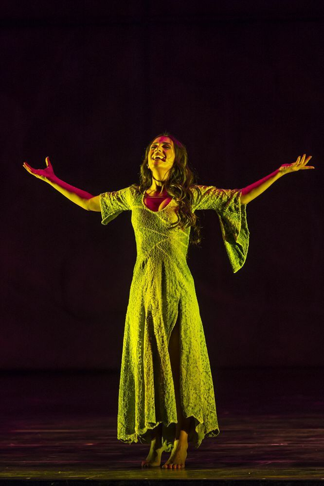

Un musical francés inspirado en la novela Notre-Dame de Paris de Victor Hugo, que cuenta una historia de amor, destino, exclusión y tragedia alrededor de la Catedral de Notre-Dame.

Notre-Dame de Paris es un musical francés basado en la novela Notre-Dame de Paris de Victor Hugo. La música fue compuesta por Riccardo Cocciante y las letras fueron escritas por Luc Plamondon.
La historia se desarrolla en París durante el siglo XV y tiene como centro a Esmeralda, una joven gitana cuya presencia provoca sentimientos muy diferentes entre varios personajes.
Quasimodo es el campanero de Notre-Dame. Vive en la catedral bajo la protección del archidiácono Claude Frollo y desarrolla un profundo cariño por Esmeralda.
Frollo también siente una fuerte atracción por Esmeralda, pero sus sentimientos entran en conflicto con sus creencias y su posición religiosa.
Por otro lado, Phoebus es un capitán que se siente atraído por Esmeralda, aunque está comprometido con Fleur-de-Lys.
Las relaciones entre estos personajes desencadenan una serie de acontecimientos que terminan convirtiendo la historia en una tragedia.
| Año | Evento | Importancia |
|---|---|---|
| 1831 | Publicación de la novela | Victor Hugo publica Notre-Dame de Paris. |
| 1998 | Estreno del musical | La historia llega al teatro musical en París. |
| 1998 | Álbum original | Las canciones del musical alcanzan gran difusión. |
| 1999 | Expansión internacional | La producción comienza a presentarse fuera de Francia. |
| Personaje | Papel en la historia | Características |
|---|---|---|
| Esmeralda | Es el centro de los sentimientos y conflictos de varios personajes. | Libre, compasiva, valiente y defensora de las personas marginadas. |
| Quasimodo | Campanero de Notre-Dame que se enamora de Esmeralda. | Sensible, solitario, leal y profundamente unido a la catedral. |
| Claude Frollo | Archidiácono de Notre-Dame y una de las principales fuerzas del conflicto. | Inteligente, autoritario, religioso y atormentado por sus deseos. |
| Phoebus | Capitán de los arqueros que se siente atraído por Esmeralda. | Carismático, atractivo, impulsivo y dividido entre el deber y sus deseos. |
| Fleur-de-Lys | Prometida de Phoebus y personaje afectado por su relación con Esmeralda. | Elegante, sensible, celosa y preocupada por su relación. |
| Clopin | Líder de los marginados y protector de Esmeralda. | Astuto, protector, rebelde y preocupado por su comunidad. |
| Personaje | Relación con Esmeralda | Destino en la historia |
|---|---|---|
| Esmeralda | Ella misma es el centro del conflicto amoroso. | Su historia termina en tragedia. |
| Quasimodo | La ama profundamente. | Queda marcado por la pérdida de Esmeralda y por la tragedia. |
| Frollo | Siente una obsesión por ella. | Su obsesión provoca consecuencias irreversibles. |
| Phoebus | Se siente atraído por ella. | Su relación con Esmeralda desencadena conflictos. |
| Fleur-de-Lys | La considera una rival. | Su relación con Phoebus queda marcada por los acontecimientos. |
| Clopin | La protege como parte de su comunidad. | Intenta proteger a los marginados durante el conflicto. |
"Belle" es una de las canciones más conocidas de Notre-Dame de Paris. La canción presenta los sentimientos de Quasimodo, Frollo y Phoebus hacia Esmeralda.
Ver más versiones de Belle en YouTube
En la película animada de Disney de 1996, la canción conocida en español como Fuego de infierno corresponde a Hellfire. Es interpretada principalmente por Claude Frollo, acompañado por voces corales.
Ver Fuego de infierno de la película en YouTube
En Notre-Dame de Paris, Frollo también tiene canciones relacionadas con su conflicto interior y sus sentimientos hacia Esmeralda. Una de las piezas más representativas es Tu vas me détruire, interpretada por Frollo.
Ver la versión musical de Frollo en YouTube
Haz clic en la campana para hacerla sonar.
Campanadas: 0
La catedral está en silencio...
¿Cuál es tu personaje favorito?
¿Cuál es el personaje que más odias?
🔔 El sonido de la catedral: Las campanas representan la presencia de Notre-Dame y la vida de Quasimodo.
🌹 El símbolo de Esmeralda: La rosa puede representar el amor, la belleza y también la fragilidad de algunos personajes.
🕯️ La oscuridad de Frollo: La luz y la oscuridad aparecen como elementos que representan los conflictos internos de los personajes.
🏰 Un escenario protagonista: La Catedral de Notre-Dame no es solamente un lugar donde ocurre la historia; también funciona como uno de sus grandes símbolos.
🎭 Contraste: La obra mezcla personajes marginados, figuras religiosas, soldados, artistas y habitantes de París para mostrar diferentes partes de la sociedad.
Notre-Dame de Paris — una historia donde el amor, el destino y la tragedia se encuentran bajo las campanas de una catedral.
Notre-Dame de Paris en YouTube